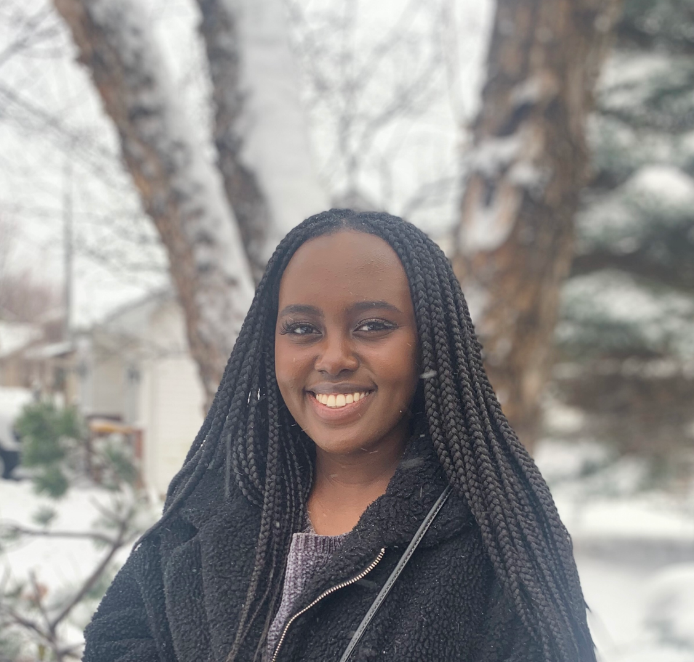

Jambo, I'm Juen!
[Name Pronounciation: JOON KOH-ech]
User Experience Researcher in Minneapolis, Minnesota
Scroll
About Me
I'm Juen Koech—a Kenyan girl living in Minnesota! I've always been passionate about people and their stories and have a knack for listening and helping people find solutions to their problems. So much so that one word my friends use to describe me is "determined"; believing that there is a solution to every problem. After receiving my bachelor of science degree in psychology at Minnesota State University, Mankato, I was confident that research was the right direction for me. Through the University of Minnesota UX/UI Bootcamp, I came to realize just how much I love user experience research. I enjoy interviewing different users and understanding their needs when using a website and finding what changes can be made to make user experiences better. Although I enjoy the design phase as well, I tend to gravitate towards the research portion due to the personal connections I am able to have with users. My personal mission statement: make the world more inclusive through technology! It can bring people together no matter their religion, disability, gender, or culture. My hobbies include: fighting to keep my plants alive (I'm pretty sure they're plotting against me), going on walks outside when it's nice out, foraging for medicinal and edible plants whenever possible, going to concerts, reading, writing, and traveling!

Picture of my last vacation: Pensacaola Beach, Florida
Scroll
Brand Statement
UX researcher with a background in psychology from Minnesota State University, Mankato. Certificate in UX/UI from University of Minnesota, Twin Cities, with skills in User-Centric Design Research, Design Thinking, Storyboarding, Visual Design Theory, HTML5, CSS, Javascript, jQuery, Visual Prototyping & Wireframing, and User Interface Development. Empathetic professional who is passionate about developing digital products that are accessible and user focused. Strengths in qualitative and quantitative research, teamwork, and time-management. Interviewed users and developed persona profiles in a recent collaborative project involving the redesign of a nonprofit organization. Adapted prototypes based on usability feedback, resulting in a more streamlined and practical experience for end users. Psychology background coupled with strong research skills and a desire to improve user experiences, makes me a valuable addition to any team.